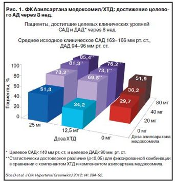
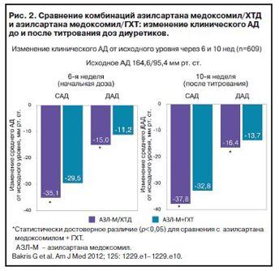

Consilium Medicum №10 2015Комбинированная терапия артериальной гипертензии: новая фиксированная комбинация блокатора рецептора ангиотензина II и диуретика (азилсартана медоксомила с хлорталидоном)
Для цитированияСкрыть списокО.Д.Остроумова1,2, В.М.Фомина1. Комбинированная терапия артериальной гипертензии: новая фиксированная комбинацияблокатора рецептора ангиотензина II и диуретика (азилсартана медоксомила с хлорталидоном). Consilium Medicum. 2015; 10: 13-18
Цель исследования. Оценка антигипертензивной эффективности и влияния на состояние сосудистой эластичности и метаболические показатели фиксированных комбинаций бисопролола с амлодипином и эналаприла с гидрохлоротиазидом у больных артериальной гипертензией.
Материалы и методы. В слепое рандомизированное контролируемое сравнительное исследование в параллельных группах препаратов бисопролол (5 мг) и амлодипин (5 мг), эналаприл (10 мг) и гидрохлоротиазид (12,5 мг) были включены 60 больных артериальной гипертензией, у которых исходно и через 12 нед лечения оценивались показатели эластичности центральных и периферических артерий.
Результаты. Достоверных различий между препаратами по антигипертензивной эффективности выявлено не было. На показатели ангиопротекции и липидного и углеводного обмена более выраженное положительное влияние оказала комбинация бисопролола и амлодипина. Степень положительного влияния была наибольшей у пациентов с исходной частотой сердечных сокращений выше 75 уд/мин.
Ключевые слова: артериальная гипертензия, сосудистая эластичность, бисопролол, амлодипин, эналаприл, гидрохлоротиазид.
solarheart7@gmail.com
Для цитирования: Недогода С.В., Саласюк А.С., Цома В.В., Чумачек Е.В. Влияние фиксированной комбинации амлодипина и бисопролола на сосудистую эластичность у пациентов с артериальной гипертензией. Consilium Medicum. 2015; 17 (10): 19–22.
The influence of fixed-dose combination of amlodipine and bisoprolol on vascular elasticity in patients with arterial hypertension
S.V.Nedogoda, A.S.Salasiuk, V.V.Tsoma, E.V.Chumachek Volgograd State Medical University of the Ministry of Health of the Russian Federation. 400131, Russian Federation, Volgograd, pl. Pavshikh bortsov, d. 1
The aim of the study is to evaluate antihypertensive efficacy and effects on the vascular elasticity and metabolic indicators in case of application of two fixed-dose combinations of bisoprolol and amlodipine and enalapril and hydrochlorothiazide in patients with arterial hypertension.
Materials and methods. 60 patients suffering from arterial hypertension were included in reference-controlled, randomized blind study among parallel group of drugs: bisoprolol (5 mg) and amlodipine (5 mg), enalapril (10 mg) and hydrochlorothiazide (12.5 mg); all 60 patients were examined initially and after 12 weeks of the treatment for central and peripheral arterial elasticity.
Results. There was no significant difference in the antihypertensive efficacy between the drugs. The combination of bisoprolol and amlodipine showed significant positive effect on the indices of angioprotection and lipid and carbohydrate metabolism. The degree of positive effect was highest in patients with baseline heart rate over 75 beats per minute.
Key words: arterial hypertension, vascular elasticity, bisoprolol, amlodipine, enalapril, hydrochlorothiazide.
solarheart7@gmail.com
For citation: Nedogoda S.V., Salasiuk A.S., Tsoma V.V., Chumachek E.V. The influence of fixed-dose combination of amlodipine and bisoprolol on vascular elasticity in patients with arterial hypertension. Consilium Medicum. 2015; 17 (10): 19–22.io.
Согласно современным подходам к терапии артериальной гипертонии (АГ) многим больным уже на старте лечения показана комбинированная антигипертензивная терапия (АГТ) [1]. Комбинацию двух антигипертензивных препаратов (АГП) в низких дозах назначают пациентам с высоким или очень высоким риском сердечно-сосудистых осложнений, т.е. наличием у них поражений органов-мишеней, метаболического синдрома, сахарного диабета (СД), ассоциированных клинических состояний, 3 и более дополнительных факторов риска (Российские рекомендации по диагностике и лечению артериальной гипертензии, 4-я редакция) [1]. К преимуществам комбинированной терапии (в том числе и на старте лечения) относят тот факт, что в большинстве случаев назначение препаратов с разными механизмами действия позволяет, с одной стороны, добиться целевого артериального давления (АД) у большего числа больных, а с другой – минимизировать количество побочных эффектов [1]. Комбинированная терапия позволяет также подавить контррегуляторные механизмы повышения АД [1]. Необходимо отметить, что эти преимущества относятся только к рациональным комбинациям антигипертензивных средств. Применение фиксированных комбинаций (ФК) АГП в одной таблетке повышает приверженность пациентов лечению [1].
Комбинации двух АГП делят на рациональные (эффективные), возможные и нерациональные [1]. К рациональным комбинациям относят в том числе и комбинацию блокаторов рецепторов ангиотензина (АТ) II (БРА) с диуретиками [1].
Среди 5 основных классов АГП БРА являются наиболее динамично развивающейся группой. Их отличительная черта – высокая антигипертензивная эффективность, мощное органопротективное действие (кардио-, нефро- и церебропротективное) и низкая, практически сопоставимая с плацебо, частота побочных эффектов (включая максимально разрешенные к применению дозы БРА) [1].
Известно, что самый эффективный способ блокирования ренин-ангиотензин-альдостероновой системы (РААС) – блокирование связи между АТ II и рецептором [2]. В основе антигипертензивного действия и других фармакологических эффектов БРА лежат несколько механизмов – один прямой и по меньшей мере два косвенных [2, 3]. Прямой механизм – это ослабление эффектов АТ II, опосредуемых через рецепторы 1-го типа. Это обусловливает уменьшение вазоконстрикции, секреции альдостерона, эндотелина-1, снижение повышенного давления в нейронах и др. Косвенные механизмы связаны со стимуляцией АТ2- и АТх-рецепторов [2, 3].

Рациональность сочетания БРА с диуретиками полностью обоснована [2]. Антигипертензивный эффект всех диуретиков ограничен неизбежно возникающей на фоне их применения реактивной гиперренинемией и вторичной гиперальдостеронемией, связанными с активацией РААС, выраженность которых значительно снижается при одновременном назначении БРА. Совместное применение БРА и диуретиков позволяет значительно повысить эффективность обоих препаратов, что ведет к расширению круга пациентов, отвечающих на терапию, позволяя чаще достигать целевого уровня АД. Так, это подтверждается данными метаанализа 43 исследований, в которых антигипертензивную эффективность БРА в виде монотерапии и комбинации с диуретиком оценивали в сравнении с плацебо, другими группами АГП или проводили прямое сравнение между разными БРА [2]. В исследованиях, включенных в данный метаанализ, использовали лозартан, валсартан, ирбесартан и кандесартан, в общей сложности в них принял участие 11 281 пациент. При монотерапии в начальной дозе 50, 80, 150 и 8 мг/сут, соответственно, для лозартана, валсартана, ирбесартана и кандесартана, все эти БРА снижали АД примерно одинаково на -10,4–11,8/-8,2–8,9 мм рт. ст. Сопоставимо было и число больных, достигших целевого уровня АД. При увеличении дозы препаратов вдвое все они продемонстрировали незначительное нарастание антигипертензивного эффекта и числа пациентов, достигших целевого уровня АД. Однако при комбинации начальных доз БРА с диуретиком наблюдалось отчетливое нарастание антигипертензивной эффективности с увеличением лиц, достигших целевого АД, до 70% [2].
У больных с низко- и норморениновой АГ эффективность БРА может быть недостаточной, добавление же диуретика помогает ее повысить. В результате эта комбинация (БРА + диуретик) эффективно снижает АД практически у всех пациентов независимо от исходной активности РААС, что позволяет применять ее при нормо- и даже гипорениновой формах АГ [2]. Дополнительное снижение АД при комбинированной терапии диуретиком и БРА также обусловлено тем, что последние потенцируют натрийуретический эффект мочегонных препаратов, повышая их действенность. Совместное применение БРА и диуретиков приводит к аддитивному антигипертензивному эффекту при использовании меньших доз обоих антигипертензивных средств.

БРА предотвращают развитие гипокалиемии, возникающей в результате стимуляции выработки альдостерона под действием диуретиков, за счет уменьшения активности АТ II и снижения концентрации альдостерона, что способствует обратному всасыванию калия, теряемому при назначении мочегонных препаратов [2]. Одновременно совместное применение БРА и диуретиков способствует усиленному выведению натрия из организма, уменьшая тем самым нагрузку объемом. Также крайне важно, что совместное применение диуретиков с БРА позволяет предотвратить отрицательное влияние диуретиков на углеводный обмен, инсулинорезистентность [1, 2].
Следовательно, сочетание БРА с диуретиками является заведомо рациональной комбинацией. Эта комбинация обладает практически теми же преимуществами, что и комбинация ингибиторов ангиотензинпревращающего фермента (ИАПФ) с диуретиками, но имеет лучший профиль переносимости.
В Российских рекомендациях по диагностике и лечению артериальной гипертензии (2010 г.) впервые сформулированы показания к назначению рациональных комбинаций [1]. Комбинация БРА и тиазидного диуретика имеет самый широкий из всех рациональных комбинаций спектр показаний и включает [1]:
- хроническую сердечную недостаточность;
- диабетическую и недиабетическую нефропатию;
- микроальбуминурию;
- гипертрофию миокарда левого желудочка;
- СД;
- метаболический синдром;
- пожилой возраст;
- изолированную систолическую АГ;
- кашель при приеме ИАПФ.
АГТ комбинацией БРА с диуретиком обеспечивает равномерный и длительный антигипертензивный эффект, что позволяет достичь целевого уровня АД у 80–90% пациентов [2]. Однако есть и некоторые ограничения. Так, например, в начале лечения необходимо учитывать медленное нарастание антигипертензивного эффекта и оценивать его примерно на 2–4-й неделе терапии, недооценка этого факта может привести к необоснованной замене препарата. Максимум антигипертензивного действия комбинации БРА с диуретиком гидрохлоротиазидом (ГХТ) наблюдается к 12-й неделе. Хорошая эффективность и отличная переносимость комбинации БРА с диуретиком, несомненно, способствуют значительной приверженности пациентов назначенному лечению [2]. Следует обратить внимание, что, хотя в Российской Федерации широко применяется большое количество ФК БРА с диуретиком, все они в качестве диуретика содержат ГХТ. Именно поэтому особый интерес вызывает новая ФК, в настоящее время зарегистрированная к применению в России, Эдарби® Кло – сочетание азилсартана медоксомила с хлорталидоном (ХТД).
Список исп. литературыСкрыть список
- Диагностика и лечение артериальной гипертензии (Рекомендации Российского медицинского общества по артериальной гипертонии и Всероссийского научного общества кардиологов). Системные гипертензии. 2010; 3: 5–26. / Diagnosis and treatment of arterial hypertension (Recommendations for the management of arterial hypertension Russian Medical Society of Arterial Hypertension and Society of Cardiology of the Russian Federation. Systemic Hypertension. 2010; 3: 5–26. [in Russian]
- Чазова И.Е., Ратова Л.Г. Комбинированная терапия артериальной гипертонии. М.: Медиа-Медика, 2007; с. 86–94. / Chazova I.E., Ratova L.G. Kombinirovannaia terapiia arterial'noi gipertonii. M.: Media-Medika, 2007; s. 86–94. [in Russian]
- Ojima M, Igata H, Tanaka M et al. In vitro antagonistic properties of a new angiotensin type 1 receptor blocker, azilsartan, in receptor binding and function studies. J Pharmacol Exp Ther 2011; 336 (3): 801–8.
- Sica D, White W, Weber M et al. Comparison of the Novel Angiotensin II Receptor Blocker Azilsartan Medoxomil vs Valsartan by Ambulatory Blood Pressure Monitoring. J Clin Hypertens (Greenwich) 2011; 13: 467–72.
- Bakris GL, Sica D, Weber M et al. The comparative effects of azilsartan medoxomil and olmesartan on ambulatory and clinic blood pressure. J Clin Hypertens (Greenwich) 2011; 13 (2): 81–8.
- White WB, Weber MA, Sica D et al. Effects of the angiotensin receptor blocker azilsartan medoxomil versus olmesartan and valsartan on ambulatory and clinic blood pressure in patients with stages 1 and 2 hypertension. Hypertension 2011; 57 (3): 413–20.
- Bönner G, Bakris G, Sica D et al. Antihypertensive efficacy of the angiotensin receptor blocker azilsartan medoxomil compared with the angiotensin-converting enzyme inhibitor ramipril. J Hum Hypertens 2013; 27 (8): 479–86.
- The ALLHAT officers and coordinators for the ALLHAT collaborative research group. Major outcome in high-risk hypertensive patients randomized to angiotensin-converting enzyme inhibitor or calcium channel blоcker vs diuretic. The antihypertensive and lipid-lowering treatment to prevent heart attack trial (ALLHAT). JAMA 2002; 288: 2981–97.
- Systolic Hypertension in the Elderly Program Cooperative Research Group: Prevention of stroke by antihypertensive drug treatment in older persons with isolated systolic hypertension: Final results of the Systolic Hypertension in the Elderly Program. JAMA 1991; 265: 3255–64.
- Neaton JD, Grimm RH Jr, Prineas RJ et al. Treatment of mild hypertension study: Final results: Treatment of Mild Hypertension Study Research Group. JAMA 1993; 270: 713–24.
- Kurtz TW. Chlorthalidone: don’t call it “thiazide-like” anymore. Hypertension 2010; 56: 335–7.
- Carter BL, Ernst ME, Cohen JD. Hydrochlorothiazide versus chlorthalidone: evidence supporting their interchangeability. Hypertension 2004; 43: 4–9.